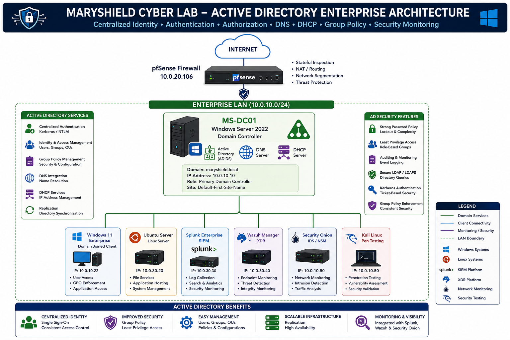

Active Directory
Executive Summary
Active Directory Domain Services (AD DS) provides centralized identity and access management within the MaryShield Cyber Lab. This project demonstrates enterprise deployment, administration, authentication, authorization, Group Policy management, and integration with enterprise security monitoring platforms including Splunk Enterprise, Wazuh, and Security Onion.
Project Objectives
- Deploy Active Directory Domain Services
- Create an enterprise forest and domain
- Configure DNS integration
- Design Organizational Units
- Create users and groups
- Implement Group Policy Objects
- Secure Active Directory
- Configure Kerberos authentication
- Monitor AD activity with Splunk, Wazuh, and Security Onion
- Detect Kerberoasting attacks
Enterprise Architecture
The Active Directory environment serves as the identity and access management platform for the MaryShield Cyber Lab. Windows Server 2022 functions as the Domain Controller, providing centralized authentication, DNS, DHCP, and directory services for enterprise systems.

This enterprise architecture illustrates how Windows Server 2022 acts as the Domain Controller for the maryshield.local domain. The Domain Controller provides centralized authentication, authorization, DNS, and DHCP services to all domain-joined systems. Security monitoring is performed by Splunk Enterprise, Wazuh XDR, and Security Onion, while Kali Linux is used to conduct authorized penetration testing within the isolated lab environment. Network traffic is protected and segmented by the pfSense firewall.
Forests and Domains
The MaryShield Cyber Lab consists of a single Active Directory forest and a single domain named maryshield.local. This configuration reflects a common enterprise deployment and simplifies centralized authentication, authorization, and policy management.
Organizational Unit Design
Organizational Units (OUs) were created to logically separate enterprise resources and simplify administration. This structure enables Group Policy inheritance, delegated administration, and organized management of users and computers.

OU Structure
maryshield.local ├── Domain Controllers ├── Servers ├── Workstations ├── Users ├── IT Administration ├── Security Groups ├── Service Accounts └── Test Accounts
User Lifecycle Management
Enterprise identity management requires standardized procedures for creating, modifying, disabling, and removing user accounts throughout the employment lifecycle.


- Create User
- Reset Password
- Unlock Account
- Disable Account
- Delete Account
- Audit User Activity
Security Groups
Security Groups simplify permission management by assigning access rights to groups rather than individual users.
| Group | Purpose |
|---|---|
| Domain Admins | Enterprise Administration |
| IT Support | Desktop Support |
| SOC Analysts | Security Monitoring |
| HR Users | Human Resources |

Group Policy Objects
Group Policy enforces enterprise-wide security configurations from a centralized location.
- Password Policy
- Account Lockout
- Windows Firewall
- PowerShell Logging
- Audit Policy
- Windows Defender

Kerberos Authentication
Kerberos is the default authentication protocol used within Active Directory. It relies on encrypted tickets rather than transmitting passwords across the network.

- User logs on.
- Domain Controller issues a Ticket Granting Ticket (TGT).
- User requests access to a service.
- Domain Controller issues a Service Ticket (TGS).
- Access is granted.
LDAP
Lightweight Directory Access Protocol (LDAP) enables applications to query Active Directory for user accounts, groups, and directory information.

How LDAP Works
Lightweight Directory Access Protocol (LDAP) is the primary directory access protocol used by Active Directory. Rather than storing user accounts locally, enterprise systems query the centralized directory service to authenticate users, retrieve group memberships, and locate directory objects.
- Authenticates enterprise users
- Retrieves user and computer objects
- Verifies group membership
- Supports centralized access control
- Provides directory searches for enterprise applications
- Works alongside Kerberos authentication
Security Monitoring
LDAP authentication activity generates Windows Security Events that are forwarded to Splunk Enterprise for centralized analysis. Wazuh provides endpoint visibility by monitoring configuration changes and directory-related events, while Security Onion analyzes LDAP network traffic for anomalous behavior. Together, these platforms enable analysts to detect suspicious authentication attempts, unauthorized directory enumeration, and abnormal account activity.
- User Authentication
- Directory Searches
- Group Membership
- Enterprise Applications
Domain Replication Concepts
Although this lab contains one Domain Controller, enterprise Active Directory environments replicate directory information between Domain Controllers to provide redundancy and high availability.

- Replication
- Global Catalog
- SYSVOL
- FSMO Roles
Active Directory Security Hardening
- Strong Password Policy
- Least Privilege
- Account Lockout
- PowerShell Logging
- Windows Defender
- Windows Firewall
- Restricted Admin Accounts
- Security Auditing


Monitoring Active Directory with Splunk
Splunk collects Windows Security Event Logs from the Domain Controller to detect authentication events, account changes, privilege escalation, and suspicious activity.
| Event ID | Description |
|---|---|
| 4624 | Successful Logon |
| 4625 | Failed Logon |
| 4720 | User Created |
| 4726 | User Deleted |
| 4732 | User Added to Group |

Monitoring Active Directory with Wazuh
Wazuh continuously monitors Windows endpoints and Active Directory servers for changes, suspicious activity, and configuration drift. It complements SIEM monitoring by providing endpoint visibility and integrity checking.

- File Integrity Monitoring
- Registry Monitoring
- Security Configuration Assessment
- Rootcheck
- Syscollector
Monitoring Active Directory with Security Onion
Security Onion monitors network traffic generated by Active Directory services using Zeek, Suricata, and full packet capture. It provides network-level visibility into authentication and directory-related communications.

- Zeek Logs
- Suricata Alerts
- PCAP
- Traffic Analysis
Kerberoasting Detection Case Study
A controlled Kerberoasting simulation was conducted within the MaryShield Cyber Lab to demonstrate enterprise detection capabilities. The exercise focused on identifying abnormal Kerberos ticket requests and correlating telemetry across multiple defensive platforms.
Attack Workflow
- Create a service account with a Service Principal Name (SPN).
- Request Kerberos service tickets from a domain-joined system.
- Capture and analyze ticket requests.
- Review Windows Security Event IDs 4768 and 4769.
- Correlate authentication events in Splunk.
- Review endpoint telemetry in Wazuh.
- Inspect network activity with Security Onion.
- Map the activity to MITRE ATT&CK technique T1558.003 – Kerberoasting.
Detection Summary
By combining endpoint logs, Windows Security Events, and network telemetry, the lab demonstrated how multiple security platforms can work together to identify and investigate Kerberoasting activity in an enterprise Active Directory environment.
Figure 1. Enterprise Active Directory architecture showing centralized identity services, enterprise clients, SIEM integration, endpoint monitoring, and network security components.
Lessons Learned
Designing and deploying an enterprise Active Directory environment provided valuable experience in identity management, enterprise networking, centralized authentication, and security monitoring. Building the environment from the ground up demonstrated how Windows Server services integrate with modern cybersecurity platforms to improve visibility and incident response.
Key Technical Lessons
- Planning Active Directory before deployment greatly simplifies administration.
- Organizational Units create a scalable and manageable enterprise structure.
- Group Policy provides centralized security enforcement across the domain.
- DNS is one of the most critical components of Active Directory functionality.
- Kerberos provides secure ticket-based authentication without transmitting passwords.
- LDAP enables centralized directory queries for users, groups, and enterprise applications.
- Splunk improves visibility by collecting Windows Security Event Logs.
- Wazuh provides endpoint monitoring and integrity validation.
- Security Onion complements host-based monitoring with network visibility.
- Layered monitoring significantly improves threat detection and incident response capabilities.
Challenges Encountered
- Configuring DNS correctly before promoting the Domain Controller.
- Troubleshooting domain join issues.
- Managing DHCP scopes and reservations.
- Configuring Windows Firewall exceptions.
- Forwarding Windows Security Logs into Splunk.
- Correlating endpoint telemetry between Wazuh and Security Onion.
Skills Demonstrated
This project demonstrates practical enterprise system administration and cybersecurity engineering skills developed through hands-on implementation within the MaryShield Cyber Lab.
Windows Server Administration
Installed, configured, and secured Windows Server 2022.
Active Directory
Designed and deployed enterprise identity services.
Enterprise Networking
Configured DNS, DHCP, IP addressing, and domain services.
Identity & Access Management
Implemented users, groups, permissions, and authentication.
Group Policy Administration
Applied centralized enterprise security policies.
Security Monitoring
Integrated Active Directory with Splunk, Wazuh, and Security Onion.
Threat Detection
Detected authentication anomalies and Kerberos attacks.
Documentation
Created enterprise-quality architecture diagrams, screenshots, and implementation guides.
Related Projects
The Windows Server 2022 and Active Directory deployment integrates with several other enterprise security technologies within the MaryShield Cyber Lab. Explore the related projects below.
Windows Server 2022
Server installation, roles, networking, and Domain Controller deployment.
View Project